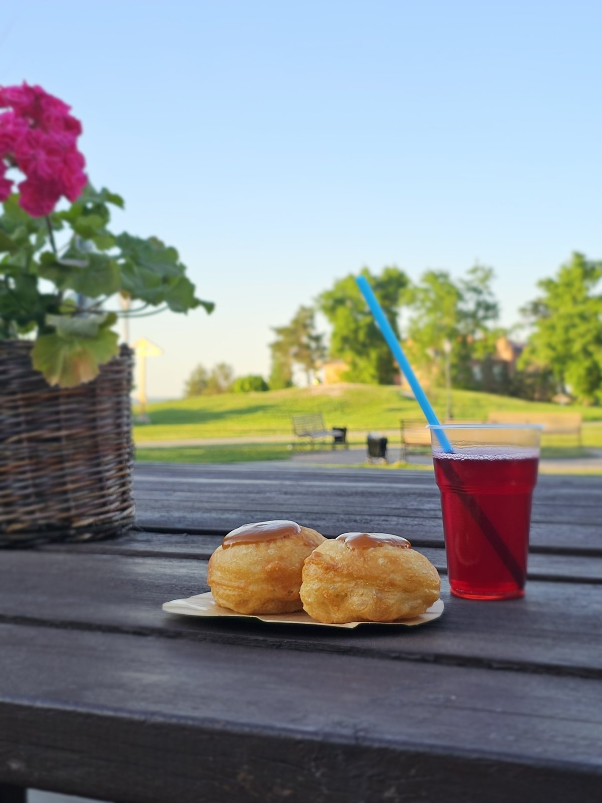

Мы едем на «Соколку»
В эти выходные наш стенд — на горе Соколка в Верхнем Услоне, на межрегиональном историко-культурном фестивале. Печём горячие оладьи с яблочным повидлом и завариваем чай на свияжских травах в настоящем самоваре, на живом огне. Идите на запах — у нас голодным никто не уходит.
- Когда
- 22 и 23 августа
с 11:00 - Где
- гора Соколка,
с. Верхний Услон - Вход
- свободный,
для всей семьи

Что у нас на стенде
Печём при вас и подаём горячими. Рецепт бабушкин, Веры Гавриловны: она пекла для семьи, научила дочь, а дочь — нас, сестёр Ольгу и Софью с острова-града Свияжск. Три поколения — и ничего не поменялось.
Что будет на фестивале
Суббота, 22 августа
- интерактивные площадки, ярмарка мастеров, выставки и мастер-классы
- музыкальный концерт
Воскресенье, 23 августа
- площадки, ярмарка и конкурс исторических костюмов
- большая военно-историческая реконструкция — пехота, кавалерия, техника
- завершение фестиваля
Программа — по анонсу организаторов, Верхнеуслонского района. Точное время площадок смотрите в группе фестиваля.
Не успеваете на «Соколку»?
Наша лавка на острове-граде Свияжск работает как обычно — ежедневно с 10:00 до 18:00. Те же оладьи, тот же самовар, только с видом на Волгу.
Как нас найти в Свияжске ★ 5,0 на Яндекс Картах — 92 оценки гостей